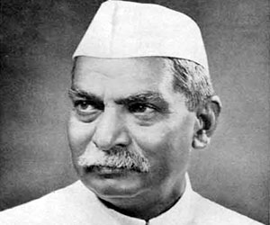
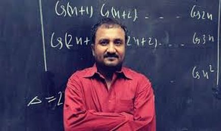

Famous Personalities Of Bihar

Dr. Rajendra Prasad
Prasad (born December 3, 1884, Zeradei, India—died February 28, 1963, Patna) was an Indian politician, lawyer, and journalist who was the first president of the Republic of India (1950-62). He also was a comrade of Mahatma Gandhi early in the noncooperation movement for independence and was president of the Indian National Congress (1934, 1939, and 1947).

Anand Kumar
Anand Kumar is an Indian mathematician and educator best known as the founder of the Super 30 program in Patna, Bihar. Born on 1 January 1973, he gained recognition for coaching economically disadvantaged students for the IIT-JEE entrance exam, helping many of them secure admission to the Indian Institutes of Technology.

Aryabhatta
Aryabhatta, born in 476 CE in Kusumapura (present-day Patna), was a renowned Indian mathematician and astronomer. He introduced the concept of zero, explained that the Earth rotates on its axis, and accurately calculated the value of pi. His famous work *Aryabhatiya* greatly influenced mathematics, astronomy, and scientific thought in ancient and modern India.